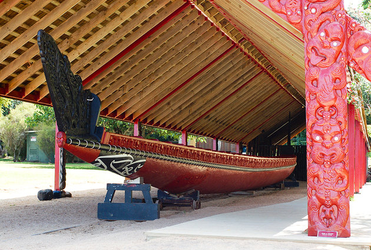
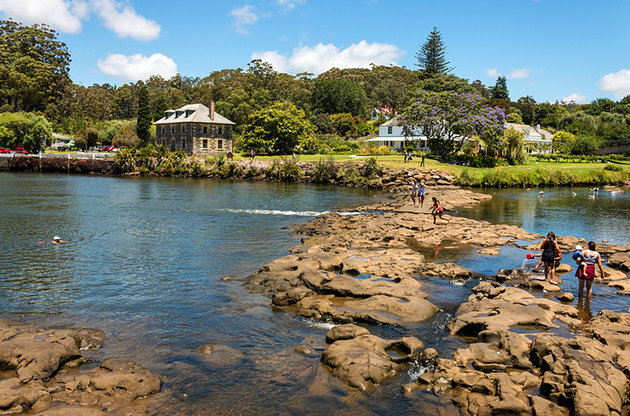
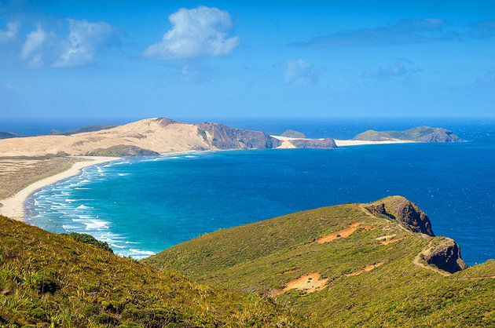
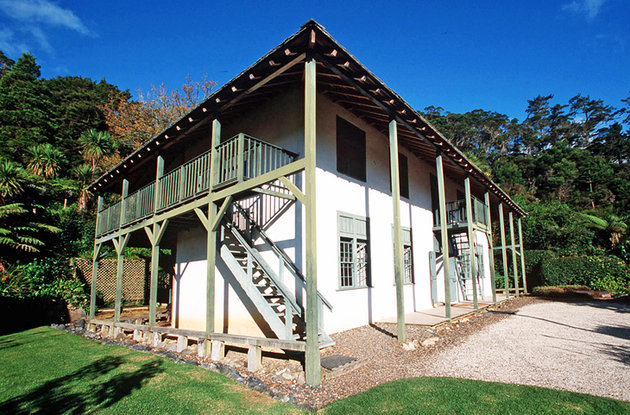

History of Bay of Islands

1.Paihia History
Missionaries were the first white people to settle Paihia in 1823. Led by Rev. Henry Williams
they built a house, store and the first church in New Zealand, which was constructed in the traditional
Maori way using raupo. Williams gained the respect and trust of the local Maori people, trying to
understand their ways and to eliminate friction between Maori and Pakeha. Henry Williams’ brother William
joined the mission. He compiled a Maori dictionary and translated the New Zealand Testament into Maori.

2.Moari History
Maori occupied the Bay of Islands from as early as the 10th century. The first tribes stayed
for only relatively short periods. Garden sites documented by archaeologists at Urimatao, on
Moturua Island, are evidence of their occupation.The Te Awa people from Dargaville area followed
these earlier transient settlers and they too stayed for only a short time before moving south.
Their two known pa (fortified villages) at Rawhiti and Manawaora, are modeled exactly on their
original Dargaville sites.

3.Russell History
Long before Captain Cook’s visit in 1769, Russell was an established settlement of various Maori tribes.
Its name at that time, Kororareka, reflected a legend that a wounded chief asked for penguin and on tasting
the broth said ” Ka reka to korora.” (How sweet is the penguin.From the early 1800s, South Sea whalers found
Kororareka ideal as a provisioning port. The town grew in response, gaining a reputation as a lawless and bawdy
port, and earning the nickname Hellhole of the Pacific.

4.Kerikeri History
According to Maori Historians, Ngati-Miru, the people who first lived in the Kerikeri district,
were attacked and driven away by a war party of Ngapuhi. Terraces are the visual evidence of the
pa (fortified settlement) the Ngapuhi built, this area is now known as Kororipo (swirling waters).